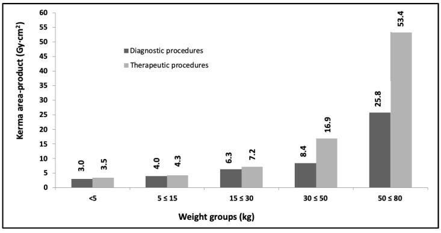
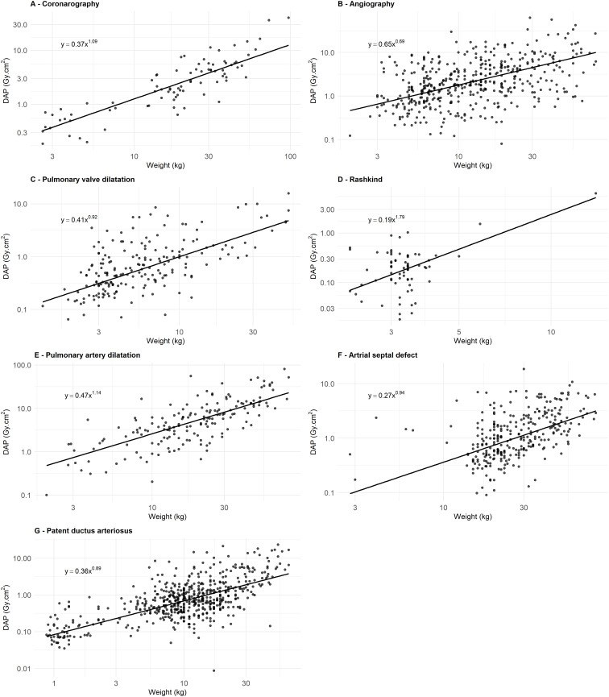
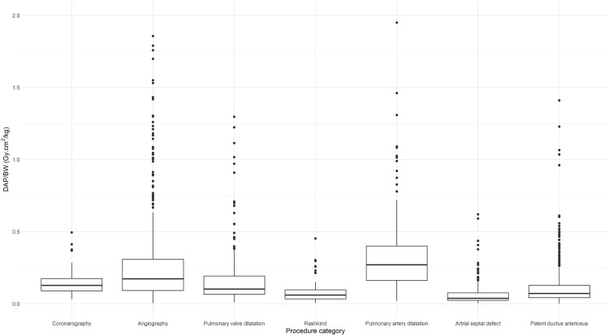

935 — Tối ưu liều can thiệp NHI: DRL theo kích thước cơ thể, preset theo cân nặng và theo dõi liều tích lũy / Pediatric interventional dose optimization
Tags: pattern:lieu-buc-xa-cao vung:toan-than score:DRL score:DAP protocol:ALARA protocol:preset-theo-can-nang
Mức chắc chắn (certainty): tổng hợp y văn (literature synthesis) — đồng thuận chuyên gia PICS/AEPC/APPCS/CSANZ/SCAI/SOLACI 2024 về thông tim nhi (J Soc Cardiovasc Angiogr Interv 2024, PMC11307799, CC BY); 1.815 ca can thiệp tim nhi 7 bệnh viện Pháp trong dự án HARMONIC (PLoS One 2025, PMC12443263, CC BY 4.0); DRL theo nhóm cân nặng của OPRIPALC (Children 2023, PMC10742238, CC BY 4.0); đoàn hệ 3.609 trẻ tim bẩm sinh Na Uy (Pediatr Radiol 2023, PMC10635954, CC BY); tổng quan hệ thống DRL fluoroscopy nhi (PMID 41671884, không mở) và nghiên cứu hệ số chuyển DAP→liều hiệu dụng (PMID 33836530, không mở). Không có ảnh bệnh nhân thật — 3 ảnh đều là biểu đồ liều từ bài CC BY.
Câu chốt: Trẻ không phải "người lớn thu nhỏ". Cùng một DAP, liều hiệu dụng ở trẻ sơ sinh cao hơn trẻ 15 tuổi tới ~10 lần (hệ số chuyển DAP→ED khác nhau 1 bậc độ lớn, PMID 33836530) — vì vậy ngưỡng DRL phải chia theo CÂN NẶNG, và câu hỏi đúng không phải "DAP bao nhiêu là nhiều" mà là "ca này thuộc nhóm cân nặng nào, đang vượt bao nhiêu lần DRL, và vượt vì thời gian chiếu hay vì chế độ máy".
1. Tổng quan bệnh học – cơ chế hình ảnh
- Vì sao trẻ nhạy cảm hơn (sinh học): mô đang lớn có hoạt động phân bào cao → nhạy với bức xạ hơn; trẻ có tuổi thọ còn dài để biểu hiện hiệu ứng ngẫu nhiên; bệnh tim bẩm sinh thường phải can thiệp lặp lại nhiều lần trong đời (PICS 2024, PMC11307799). Mô hình rủi ro dùng trong thực hành là tuyến tính không ngưỡng (LNT) — không có ngưỡng "an toàn tuyệt đối".
- Vì sao DAP không tỉ lệ với rủi ro: DAP (KAP) = air kerma × diện tích trường chiếu (Gy·cm²). Trẻ nhỏ có trường chiếu nhỏ → DAP thấp, nhưng cùng DAP lại dồn vào khối mô nhỏ hơn → liều hiệu dụng (ED) cao hơn. Số liệu: hệ số chuyển DAP→ED khác nhau ~10 lần giữa sơ sinh và 15 tuổi, và ED tối đa 26 mSv ghi nhận ở nhóm sơ sinh (PMID 33836530).
- Ba đại lượng phải đọc cùng lúc (và đừng lẫn):
- DAP/KAP (Gy·cm²) — tổng "lượng bức xạ × diện tích", dùng để so sánh với DRL và tính ED.
- Air kerma tại điểm tham chiếu IRP (mGy) — xấp xỉ liều da lối vào, dùng cho hiệu ứng tất định (ban đỏ, rụng tóc); đo ở 15 cm từ isocenter về phía bóng.
- Thời gian chiếu (FT, phút) — không phải liều, chỉ là đại diện cho độ phức tạp; PICS nói rõ FT không dùng để đo liều.
- Vì sao trẻ vẫn có thể nhận liều "người lớn": máy xuất xưởng cấu hình mặc định cho người lớn ("out of the box"); nếu không đổi preset theo cân nặng thì kV, lọc, lưới, tốc độ khung hình đều của người lớn → DAP tăng gấp nhiều lần (PMC11307799).
- Số liệu nền để hiệu chỉnh trực giác: trong 3.609 trẻ tim bẩm sinh (PMC10635954), 91,0% lượt chụp là X-quang thường quy, chỉ 4,0% là CT; ED trung vị 0,008–0,02 mSv cho X-quang ngực và 0,76–3,47 mSv cho CT ngực — nhưng vì số lần chụp nhiều (4–12% trẻ có ≥ 10 phim ngực), X-quang ngực đóng góp 28–65% tổng liều của CT ngực (40% khi gộp mọi tuổi). Bài học: liều thấp × rất nhiều lần ≠ ít.
- Định nghĩa DRL (ICRP 135) — dùng đúng thuật ngữ: giá trị điển hình (typical value) = trung vị của phân bố liều; DRL = bách phân vị 75 của phân bố trung vị từng cơ sở cho một loại thủ thuật × một nhóm cân nặng/tuổi; cỡ mẫu tối thiểu 20 bệnh nhân (10 nếu thủ thuật hiếm). Vượt DRL không phải "sai" mà là tín hiệu phải rà soát quy trình.
- Con số DRL thực tế (HARMONIC, 534 ca chẩn đoán + 1.281 ca điều trị, 5 nhóm cân nặng): DAP trung vị tăng theo cân nặng rất khác nhau giữa các thủ thuật — chụp mạch vành 0,5 → 14,6 Gy·cm², chụp mạch máu 0,7 → 9,2, nong van động mạch phổi 0,3 → 11,7, đặt stent/nong động mạch phổi 1,1 → 26,5, đóng PDA thấp hơn (0,1 → 3,1); FT trung vị cao nhất ở nong/nhánh động mạch phổi 17,6 phút, chụp mạch máu 8,1 phút, chụp vành 4,1 phút (PMC12443263). Nghĩa là cùng một "ca nặng" nhưng DAP khác nhau 10 lần tùy thủ thuật → DRL phải theo thủ thuật, không gộp.

*Hình: bách phân vị 75 của KAP (Gy·cm²) theo nhóm cân nặng — thủ thuật chẩn đoán (cột đậm) vs điều trị (cột nhạt): < 5 kg 3,0/3,5 · 5–15 kg 4,0/4,3 · 15–30 kg 6,3/7,2 · 30–50 kg 8,4/16,9 · 50–80 kg 25,8/53,4. Chênh lệch giữa nhóm nhỏ nhất và lớn nhất ~8,6 lần (chẩn đoán) và ~15 lần (điều trị). Nguồn: Children 2023;10(12), PMCID PMC10742238, CC BY 4.0.*2. Mẫu hình + chẩn đoán phân biệt theo vị trí (Gamut)
- Mẫu hình cần nhận ra: "ca can thiệp nhi có DAP/air kerma vượt DRL của nhóm cân nặng" — trước khi kết luận "máy lỗi", phải loại trừ 5 nguồn tăng liều theo thứ tự tần suất:
- Preset người lớn (kV cao, lọc mỏng, lưới chống tán xạ còn bật, tần số khung hình cao).
- Thời gian chiếu dài (giải phẫu phức tạp, nhiều lần chụp DSA, chuyển vị trí bàn nhiều).
- Phóng đại hình học/điện tử (FOV nhỏ, 3DRA, chụp nghiêng) — giảm nửa FOV làm liều da tăng gấp đôi.
- Hình học bệnh nhân–bàn–detector (bàn thấp, bệnh nhi lệch isocenter, tay/thiết bị trong trường chiếu).
- Tích lũy qua nhiều lần can thiệp (trẻ tim bẩm sinh, bệnh thận, dị dạng mạch).
- Gamut theo nhóm tuổi/cân nặng (lý do phải chia nhóm): < 5 kg — DAP tuyệt đối nhỏ nhất nhưng ED/DAP cao nhất; 5–15 kg — nhóm phổ biến nhất, DAP tăng ~2 lần so với < 5 kg; 15–50 kg — DAP tăng gần tuyến tính theo cân nặng; 50–80 kg — DAP tăng vọt ở thủ thuật điều trị (van, stent) vì thời gian chiếu và số dụng cụ tăng (PMC10742238, PMC12443263).
- Gamut theo thủ thuật (DAP tăng dần): đóng PDA < đóng ASD ≈ nong van phổi < chụp vành < chụp mạch máu < nong/đặt stent động mạch phổi (cao nhất, FT 17,6 phút).
- Gamut "DAP cao mà FT bình thường": nghĩ ngay preset/chế độ máy (lưới, lọc, kV, phóng đại) — không phải tay nghề.
- Gamut "FT dài mà DAP tương xứng": nghĩ độ phức tạp giải phẫu (nhánh phổi nhỏ, tuần hoàn bàng hệ, nhiều lần đổi catheter) → can thiệp bằng 3DRA/image fusion, siêu âm trong lòng mạch (ICE) để giảm số lần chụp, chứ không chỉ "chiếu ít đi".

Hình: DAP–cân nặng trên thang log–log cho 7 thủ thuật; phương trình DAP = a × BW^b với b = 0,69–1,79: chụp vành 0,37 × BW^1,09, chụp mạch 0,65 × BW^0,69, nong van phổi 0,41 × BW^0,92, Rashkind 0,19 × BW^1,79, stent ĐM phổi 0,47 × BW^1,14, đóng ASD 0,27 × BW^0,94, đóng PDA 0,36 × BW^0,89 (R² 0,18–0,75). Nguồn: PLoS One 2025;20(9):e0332241, PMCID PMC12443263, CC BY 4.0.3. Bảng so sánh phân biệt (ma trận đối chiếu)
| Nguyên nhân DAP/liều cao | Dấu hiệu trên báo cáo liều | Chốt vào (rule-in) | Chốt loại (rule-out) | Gợi ý xác nhận |
|---|---|---|---|---|
| Preset người lớn (kV cao, lọc mỏng, lưới bật) | DAP cao nhưng FT bình thường; ảnh "đẹp, ít nhiễu" | Đối chiếu cùng thủ thuật, cùng cân nặng với DRL: > 1,5–2 lần mà FT không tăng | FT rất dài so với chuẩn → do độ phức tạp, không do preset | Kiểm tra preset đang chọn, có lưới, kV, lọc thêm, chế độ liều thấp/trung bình/cao |
| Thời gian chiếu dài | FT tăng kèm DAP tăng gần tuyến tính | FT > 2 lần trung vị của thủ thuật đó (vd stent ĐM phổi > 17,6 phút) | FT bình thường + DAP cao → preset/phóng đại | Ghi lại số lần chụp (runs), thời gian đổi dụng cụ; xem học việc (trainee) |
| Phóng đại/3DRA | Air kerma tăng mạnh trong khi DAP tăng ít | Dùng FOV nhỏ hoặc 3DRA trong ca; air kerma/FT tăng vọt | DAP tăng nhưng air kerma bình thường → trường chiếu rộng, không phóng đại | Đối chiếu FOV đã chọn và số lần 3DRA; giảm nửa FOV = gấp đôi liều da |
| Hình học bàn/detector | DAP tăng không giải thích bởi thủ thuật; ảnh nhiều tán xạ | Bàn thấp, bệnh nhi xa isocenter, tay trong trường chiếu | Bàn cao, bệnh nhi ở isocenter → loại trừ hình học | Kiểm tra chiều cao bàn và tư thế; dùng khoảng không khí 15 cm thay lưới khi bỏ lưới |
| Tích lũy nhiều lần can thiệp | DAP mỗi lần trong DRL nhưng tổng đời cao | ≥ 3 can thiệp có fluoroscopy, hoặc ED tích lũy > 10 mSv | Chỉ 1 lần can thiệp → loại trừ tích lũy | Sổ liều cá nhân/ris/PACS dose report; cân nhắc thay thế bằng MRI/echo cho lần sau |
| Thiết bị cũ/không bảo trì | DAP tăng dần theo thời gian trên cùng thủ thuật | Cùng protocol mà DAP tăng > 20% sau bảo trì/thay bóng | DAP ổn định → loại trừ | QA vật lý định kỳ; PICS khuyến cáo thay hệ máy mỗi 8–10 năm |
4. Protocol chụp + hệ phân độ/điểm chuẩn hóa
- Preset theo cân nặng (bắt buộc, không dùng preset người lớn): đặt sẵn các nhóm 1–125 kg với mức liều thấp nhất còn đủ ảnh; nguyên tắc PICS: mặc định liều thấp rồi tăng lên khi ảnh không đủ, không làm ngược lại (PMC11307799).
- Thông số cụ thể (PICS 2024):
- Xung fluoroscopy ≤ 15 xung/giây, acquisition ≤ 30 khung/giây; ca chậm (venography, bơm bóng) dùng thấp hơn.
- Độ rộng xung 5 ms cho trẻ nhỏ (ảnh nét khi tim đập nhanh), tới 10 ms cho trẻ lớn.
- Không để kV < 60; tăng lọc thêm theo cân nặng thay vì hạ kV.
- Bỏ lưới chống tán xạ khi < 10–20 kg (lưới làm bộ điều khiển tự động tăng liều); thay bằng khoảng không khí ~15 cm (≈ tăng 1 bậc phóng đại điện tử mà không tăng liều).
- Bắt đầu ở chế độ liều thấp — có thể giảm ≥ 50% so với chế độ cao.
- Thu nhỏ trường chiếu (collimation) luôn thấy trong màn hình; tránh phóng đại điện tử nếu không cần.
- Nâng bàn/đưa bệnh nhi vào isocenter; liều da giảm theo bình phương nghịch khoảng cách.
- Last-image-hold, virtual collimation, lưu fluoroscopy thay vì chụp lại; 3DRA/image fusion để giảm số lần chụp.
- Báo cáo liều mỗi ca (bắt buộc): DAP, air kerma tại IRP, FT — cả 3, cho mọi can thiệp tim nhi (PICS 2024). Ghi vào hồ sơ để lần can thiệp sau biết liều đã nhận.
- Ngưỡng hiệu ứng tất định (dù hiếm ở trẻ): 2–5 Gy → ban đỏ thoáng qua, có thể rụng tóc, thường hồi phục; ≥ 5 Gy → rụng tóc vĩnh viễn, teo/induration da; > 5 Gy phải tư vấn bệnh nhân/gia đình và hẹn khám lại 4–6 tuần (PMC11307799).
- Chu trình DRL (ICRP 135): thu ≥ 20 ca (10 nếu hiếm) cho mỗi thủ thuật × nhóm cân nặng → tính trung vị (typical value) và bách phân vị 75 (DRL) → so sánh, rà soát nếu vượt → sửa protocol → đo lại. Không dùng một ca để kết luận.
- Kiểm soát chất lượng vật lý: hiệu chuẩn, kiểm liều/ảnh định kỳ; thay hệ máy mỗi 8–10 năm (PICS); đo liều nhân viên (kính bảo hộ chì cho người sát nguồn, liều mắt 20 mSv/năm theo EU 2013/59).
flowchart TD
A[Ca can thiệp nhi] --> B[Chọn preset theo cân nặng<br/>1-125 kg]
B --> C[Chế độ liều thấp + xung 15/giây<br/>bỏ lưới nếu dưới 10-20 kg]
C --> D[Collimation + isocenter<br/>last-image-hold]
D --> E[Ghi DAP + air kerma + FT]
E --> F{Trong DRL<br/>của nhóm cân nặng?}
F -->|Có| G[Lưu sổ liều cá nhân]
F -->|Không| H[Phân tích nguyên nhân<br/>FT, preset, phóng đại, hình học]
H --> I[Sửa protocol và huấn luyện]
I --> J[Thu lại 20 ca<br/>tính lại trung vị và DRL]
J --> F
- Hệ phân độ dùng trong bài: bậc "vượt DRL" = (1) trong DRL (< bách phân vị 75); (2) vượt nhẹ 1,0–1,5 lần** → rà soát nội bộ; (3) vượt 1,5–2 lần → hội chẩn vật lý y khoa; (4) **> 2 lần → coi là ca bất thường, phân tích từng bước (FT, preset, 3DRA). Không dùng ngưỡng này thay cho đánh giá air kerma ở ca dài.
5. Biến thể bình thường và cạm bẫy
- Biến thể bình thường: trẻ 50–80 kg có DAP cao gấp nhiều lần trẻ < 5 kg nhưng ED/DAP thấp hơn → đừng so DAP tuyệt đối giữa các nhóm.
- Cạm bẫy 1 — hạ tần số khung hình tưởng giảm liều tuyến tính: một số hệ tự tăng liều mỗi khung để giữ độ nhiễu cảm nhận → giảm liều không tỉ lệ với giảm khung hình (PMC11307799). Phải đo DAP, không suy ra từ fps.
- Cạm bẫy 2 — chuẩn hóa DAP theo cân nặng (DAP/BW) rồi so sánh: DAP/BW không hằng số — trên 1.815 ca, trung vị DAP/BW của chụp mạch máu 0,17 Gy·cm²/kg (IQR 0,09–0,31) so với chụp vành 0,13 (0,09–0,17) và nong van phổi 0,10; phân bố rất rộng ở nhóm nhỏ (PMC12443263, Hình 3). Chia cho cân nặng không biến DAP thành liều sinh học.
- Cạm bẫy 3 — dùng FT làm thước đo liều: FT không phản ánh preset, lọc, lưới, phóng đại; hai ca cùng FT có thể lệch DAP vài lần. Ngược lại, FT vẫn hữu ích để so độ phức tạp giữa các trung tâm (tổng quan hệ thống: FT can thiệp trung bình 9,75 phút vs chẩn đoán 2,3 phút, PMID 41671884).
- Cạm bẫy 4 — so DRL giữa các trung tâm như so "điểm thi": tổng quan 14 bài cho thấy DAP và FT rất không đồng nhất giữa các cơ sở (I² cho thấy không đồng nhất), phản ánh khác biệt case-mix và cách gọi tên thủ thuật, không chỉ tay nghề (PMID 41671884).
- Cạm bẫy 5 — "liều thấp là tốt" tuyệt đối: hạ liều làm ảnh nhiễu → kéo dài ca → tổng DAP tăng. PICS nhấn mạnh: một ca bị kéo dài vì ảnh kém không phải là giảm liều.
- Cạm bẫy 6 — bỏ qua liều tích lũy: trẻ tim bẩm sinh có thể nhận nhiều lần can thiệp + rất nhiều phim ngực (4–12% trẻ có ≥ 10 phim ngực, PMC10635954) — sổ liều theo từng bệnh nhi là công cụ, dù PICS lưu ý chưa có bằng chứng rằng biết tổng liều làm thay đổi quyết định lâm sàng.
6. Tự lượng giá — Blind Quiz ngay trên trang tĩnh (không cần app)
Ca 1 — Báo cáo DRL của khoa: bách phân vị 75 theo nhóm cân nặng
- Gợi ý lâm sàng: khoa mới triển khai can thiệp nhi, cần đặt ngưỡng cảnh báo cho từng nhóm cân nặng.
- Câu hỏi: (1) Nhóm nào có KAP cao nhất và cao hơn nhóm nhỏ nhất bao nhiêu lần? (2) Vì sao nhóm 30–50 kg có khoảng cách chẩn đoán/điều trị lớn hơn nhóm nhỏ? (3) Dùng các số này thế nào cho đúng?
Bấm để hiện đáp án (findings + chẩn đoán)
- Số liệu: 50–80 kg cao nhất — 25,8 Gy·cm² (chẩn đoán) và 53,4 Gy·cm² (điều trị); so với < 5 kg (3,0/3,5) → ~8,6 lần và ~15 lần.
- Vì sao: ở nhóm lớn, thủ thuật điều trị (van, stent, đóng lỗ) có nhiều dụng cụ và FT dài hơn hẳn; ở nhóm < 5 kg phần lớn là chẩn đoán/nong bóng đơn giản.
- Cách dùng đúng: lấy bách phân vị 75 làm DRL nội bộ; mỗi ca vượt phải rà soát FT, preset, phóng đại, không kết luận từ 1 ca; thu ≥ 20 ca/nhóm rồi mới cập nhật.
- Nguồn ảnh: Children 2023;10(12), PMCID PMC10742238, CC BY 4.0.
Ca 2 — Bé 20 kg cần nong/đặt stent động mạch phổi
- Gợi ý lâm sàng: ca dự kiến phức tạp; khoa muốn dự báo DAP để đặt ngưỡng dừng và hội chẩn.
- Câu hỏi: (1) Thủ thuật nào có số mũ b cao nhất và nghĩa là gì? (2) Ước lượng DAP cho 20 kg với stent ĐM phổi. (3) Nếu ca thực tế 40 Gy·cm² thì xử trí?
Bấm để hiện đáp án (findings + chẩn đoán)
- Số mũ: Rashkind b = 1,79 (DAP tăng nhanh nhất theo cân nặng); stent ĐM phổi b = 1,14; chụp mạch b = 0,69 (gần như không phụ thuộc cân nặng).
- Ước lượng: DAP = 0,47 × 20^1,14 ≈ 14,3 Gy·cm² (trung vị kỳ vọng); nếu FT kéo dài 25–30 phút thì cao hơn là hợp lý.
- Nếu 40 Gy·cm²: ~2,8 lần trung vị → mức 4 ("bất thường") → phân tích FT, số lần chụp, FOV, lưới, và air kerma để loại trừ nguy cơ da; ghi vào sổ liều cá nhân.
- Nguồn ảnh: PLoS One 2025;20(9):e0332241, PMCID PMC12443263, CC BY 4.0.
Ca 3 — Khoa chuẩn hóa DAP theo cân nặng và thấy "trẻ nhỏ liều cao hơn"

- Gợi ý lâm sàng: bảng DAP/BW được đưa vào báo cáo tháng; nhóm can thiệp phản ánh "trẻ < 5 kg bị chiếu nhiều".
- Câu hỏi: (1) Đọc đúng hình này thế nào? (2) Vì sao không nên dùng DAP/BW làm chỉ số duy nhất? (3) Chỉ số nào cần báo cáo thêm?
Bấm để hiện đáp án (findings + chẩn đoán)
- Hình: DAP/BW (Gy·cm²/kg) theo thủ thuật — trung vị chụp mạch 0,17 (IQR 0,09–0,31), chụp vành 0,13, nong van phổi 0,10, stent ĐM phổi 0,27, phân bố đuôi rất dài ở nhóm nhỏ.
- Vì sao sai: DAP/BW không hằng số và không phải liều sinh học; nó thưởng cho trẻ nhỏ (mẫu số nhỏ) trong khi ED/DAP lại cao nhất ở sơ sinh (hệ số chuyển khác ~10 lần, PMID 33836530).
- Báo cáo thêm: air kerma tại IRP (nguy cơ da), FT (độ phức tạp), và số lần can thiệp tích lũy của bệnh nhi.
- Nguồn ảnh: cùng bài PMC12443263, CC BY 4.0.
Bài liên quan chéo
- 932 – An toàn bức xạ trong CT và DSA
- 937 – Liều CT ở trẻ: SSDE, DRL nhi & liều tích lũy (CT, không phải fluoroscopy)
- 900 – Nền tảng can thiệp: sinh thiết & dẫn lưu
- 600 – Tổng quan Nhi khoa: ALARA và thể tích phổi sơ sinh
Ảnh
935_toi-uu-lieu-can-thiep-nhi_DRL_PMC10742238-F3.jpg— KAP bách phân vị 75 theo nhóm cân nặng (CC BY 4.0).935_toi-uu-lieu-can-thiep-nhi_DRL_PMC12443263-F3.jpg— DAP/cân nặng theo thủ thuật (CC BY 4.0).935_toi-uu-lieu-can-thiep-nhi_DRL_PMC12443263-F4.jpg— đường DAP–cân nặng log–log (CC BY 4.0).- Nguồn + giấy phép từng ảnh:
images/CREDITS.md; link bài gốc:sources.md.
Không dùng để chẩn đoán độc lập khi chưa có người hướng dẫn.